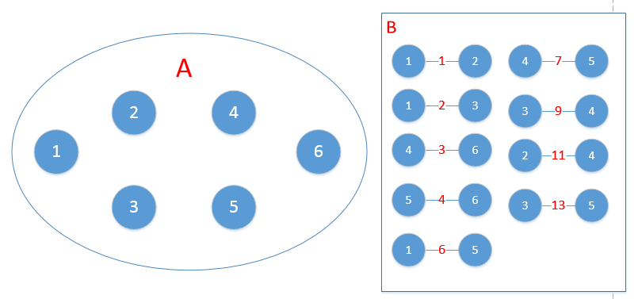
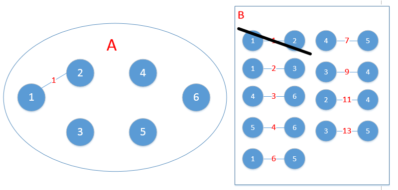
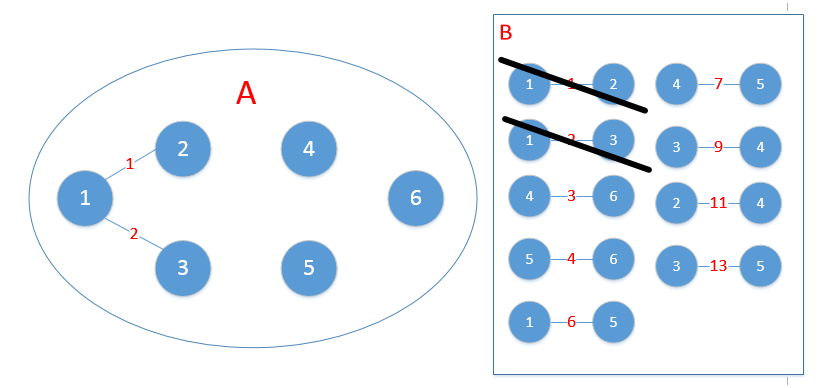
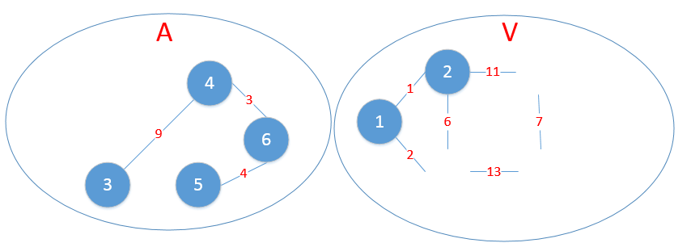
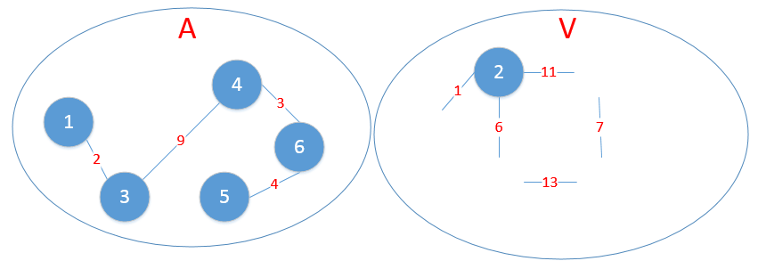
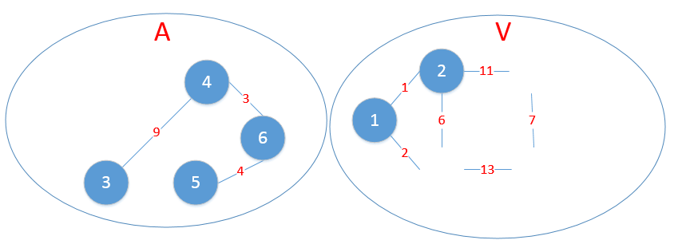
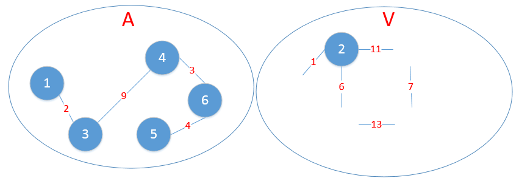

生成树，是指图的一个最小连通的子图，该子图少一条边，就会不连通，多一条边，就会有环。
最小生成树，是指边有权值的情况下，找到权值的总和最小的那个连通子图。
 如图，边上的数值如果代表距离的话，求最小生成树，就是求一个用最短的距离把所有点连接起来的方案。 我们通过仔细观察实验可以得出，最小的生成树是这样的。
如图，边上的数值如果代表距离的话，求最小生成树，就是求一个用最短的距离把所有点连接起来的方案。 我们通过仔细观察实验可以得出，最小的生成树是这样的。 
上面是一个最小生成树的实例，那么我们依照怎样的规则得出来的最小生成树呢，总不能靠看吧？
其实，这个问题用贪心法就可以解决。
Kruskal算法
对于给定的无向有权图$ G=(V,E)\(，Kruskal算法描述如下： > 1. 构造空集合A，并将图G中所有点加入集合A，此时A为有|V|棵树的森林。 > 2. 将图\)G\(中所有边按照权重进行排序，形成有序集合\)B$。 > 3. 对于步骤2中排序后集合B中权重最小的边（u，v），尝试将（u，v）以及点u、v加入到集合A中。 > 4. 如果步骤3中尝试加入的点和边，对于图A而言，不形成回路，则添加点u、v及边（u，v），否则不添加。 > 5. 将步骤3处理的边（u，v）从集合B中删除。 > 6. 判断此时作为图的集合A，是否满足边的数量等于|V|-1（也即满足最小生成树的要求），如果是，则找到最小生成树，如果不是，则转至步骤3。
上面给出的例子，如果按照Kruskal算法，过程是下面这个样子的。 初始化的时候，A集合包含所有的顶点，B集合包含按照权值从小到达排序好的边。  第一次，添加1–>2, 得到  第二次，添加1–>3,得到  第三次，添加4–>6，得到  第四次，添加5–>6,得到
第四次，添加5–>6,得到  第五次，应该添加2–>3,但是如果添加了2–>3就形成的回路，所以该次不添加，从集合B中删除2–>3,继续看下一个。
第五次，应该添加2–>3,但是如果添加了2–>3就形成的回路，所以该次不添加，从集合B中删除2–>3,继续看下一个。  第六次，应该添加4–>5,但是如果添加了，就形成了回路，所以也应该跳过。
第六次，应该添加4–>5,但是如果添加了，就形成了回路，所以也应该跳过。  第七次，应该添加3–>4,得到
第七次，应该添加3–>4,得到  此时，所有的点都已经连通，所以算法结束。最小生成树找出来了。
此时，所有的点都已经连通，所以算法结束。最小生成树找出来了。
分析整个过程，判断连通与否 和 判断算法是否结束 是每一步操作都要检查的，所以必须要有高效的方法。 判断算法是否结束可以用A的边的数目是否达到了顶点的数目-1， 判断联通性就要用到并查集了。并查集是一种多个树组成的数据结构，可以方便的查出同组不同组的问题。
使用并查集实现的Kruskal算法如下：
prime算法
对于图G=（V，E），Prim算法描述如下： > 1. 给定空集合A，以及任何一点v0属于{V}，将v0加入集合A中，此时A={v0}。 > 2. 对于集合A中的任意一点u，以及V-A中任意一点w，找到权重最小的边（u，w），常识将（u，w）加入集合A。 > 3. 判断步骤2中的边（u，w）是否使图A形成回路，如果形成回路，则不加入A，否则将点w和边（u，w）加入A。 > 4. 判断此时图G中所有点{V}是否已经全部加入到集合A中，如果是，则最小生成树已经找到，退出；否则，转步骤2。
上面的例子用prime算法来做的过程是： 初始化的时候，A是空的，V包含了所有的点。  第一步，从V中任意找一个点加入集合A中；
第一步，从V中任意找一个点加入集合A中；  第二步，找到4和其余的顶点之间权重最小的边，是4–6,
第二步，找到4和其余的顶点之间权重最小的边，是4–6,  第三步，找到4，6和其余的顶点之间权重最小的边，5–6，
第三步，找到4，6和其余的顶点之间权重最小的边，5–6，  第四步，找到4，5，6和其余的顶点之间权重最小的边，4–3  第五步，找到3，4，5，6和其余的顶点之间权重最小的边，1–3  第六步，找到1，3，4，5，6和2之间权重最小的边，1–2，
第四步，找到4，5，6和其余的顶点之间权重最小的边，4–3  第五步，找到3，4，5，6和其余的顶点之间权重最小的边，1–3  第六步，找到1，3，4，5，6和2之间权重最小的边，1–2，  此时，所有的顶点都加入了集合A，算法结束。 可以看到，结果和上面的Kruskal算法算法是一致的。一个是从边来考虑，一个是从顶点来考虑，二者实际上都是贪心法的思路。
此时，所有的顶点都加入了集合A，算法结束。 可以看到，结果和上面的Kruskal算法算法是一致的。一个是从边来考虑，一个是从顶点来考虑，二者实际上都是贪心法的思路。
prime算法的核心是找到两个集合之间权重最小的边，这个可以用堆实现。 prime算法的一种实现：